3INF · Laboratorio · giovedì 05/11/2026 · ore 11-12 · a coppie: un PC per coppia · si consegna la scheda con un bottone
Ora 1 · Impostazioni di base, sicurezza e smontaggio
আজকের কাজ: PC খোলা, আবার জোড়া দেওয়া আর সিস্টেম চালু করা। জোড়ায় কাজ করো।
La pagina viene aggiornata spesso durante la lezione: premi F5 per vedere la versione nuova.
Chi siete?
Scrivete i vostri nomi e il numero del banco: servono al cruscotto e alla scheda.
তোমার নাম, সঙ্গীর নাম আর বেঞ্চের নম্বর লেখো।
I ruoli adesso
Il percorso di questa ora
Non dovete scegliere niente: partite dal passo con il bordo blu. Ogni passo fatto: premete «Ho fatto!».
নীল বর্ডারের ধাপ থেকে শুরু করো। প্রতিটি ধাপ শেষে «Ho fatto!» চাপো।
Sei bloccato? Scrivi la domanda nella casella dell'assistente in fondo alla pagina: ti risponde subito. Alza la mano solo se il PC non funziona, se un pezzo si rompe o se qualcuno si fa male.
আটকে গেলে নিচের সহকারী বাক্সে প্রশ্ন লেখো। PC কাজ না করলে, কিছু ভাঙলে বা কেউ আঘাত পেলে তবেই হাত তোলো।
Impostazioni di base: Chrome ed estensioni
Apri la pagina Impostazioni di base e fai i suoi 5 passi: Chrome come browser predefinito e le estensioni dei file visibili. Poi torna qui.
«Impostazioni di base» পাতা খোলো: Chrome ডিফল্ট ব্রাউজার আর ফাইলের এক্সটেনশন দেখানো। তারপর ফিরে এসো।
Apri «Impostazioni di base» (si apre in una finestra nuova, poi torna qui)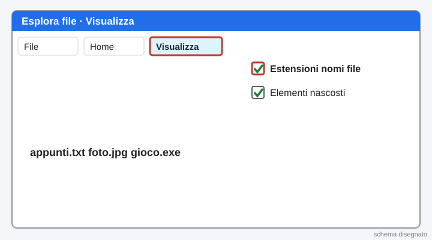
Vinci subito: scrivete i nomi e guardate i ruoli
Scrivete i vostri nomi nel riquadro «Chi siete?» e scegliete il numero del banco. La pagina vi dà i ruoli: MANI smonta e monta, OCCHI legge il passo e compila la scheda. A ogni fase vi scambiate.
নাম লেখো, বেঞ্চের নম্বর বেছে নাও। MANI খোলে আর জোড়া দেয়, OCCHI পড়ে আর ফর্ম পূরণ করে। প্রতি ধাপে ভূমিকা বদলাও।
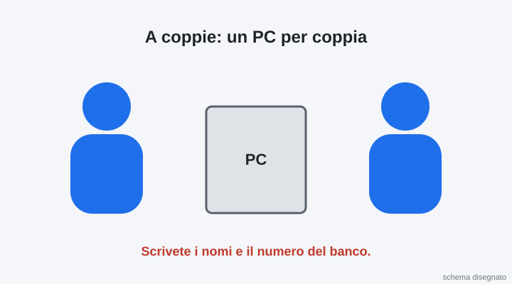
Spegni il PC e togli la spina
Spegni il PC del banco. Togli la spina dalla presa della corrente. Solo dopo si apre il case.
PC বন্ধ করো আর প্লাগ খুলে ফেলো। তারপরই কেস খোলো।
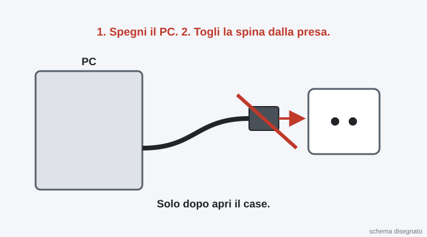
Scarica l'elettricità statica
Tocca con la mano il metallo del case. Se c'è il braccialetto antistatico, mettilo e attacca la pinza al metallo del case. Così non rompi la RAM.
কেসের ধাতু হাত দিয়ে ছোঁও (অথবা অ্যান্টিস্ট্যাটিক ব্রেসলেট পরো)। এতে RAM নষ্ট হয় না।
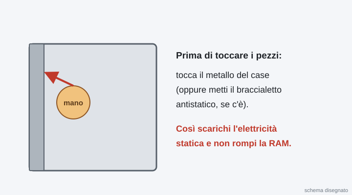
Prepara la scatola delle viti
Metti la scatola vicino al PC. Ogni vite che togli va subito nella scatola.
স্ক্রুর বাক্স কাছে রাখো। প্রতিটি স্ক্রু সঙ্গে সঙ্গে বাক্সে রাখো।
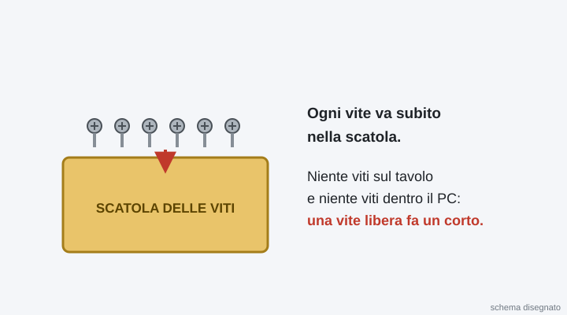
Apri il case
Gira il PC. Svita con il cacciavite a stella le 2 viti del pannello laterale, dietro. Fai scorrere il pannello verso il retro e appoggialo sul tavolo.
PC ঘোরাও। পেছনের ২টি স্ক্রু খোলো, পাশের প্যানেল পেছনের দিকে সরিয়ে খুলে ফেলো।
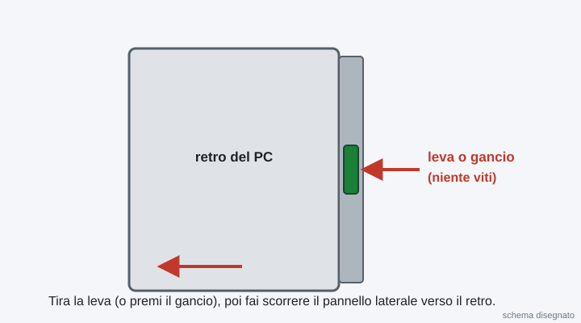
Riconosci i componenti
Guarda lo schema: ci sono 8 lettere, da A a H. Nella scheda in fondo alla pagina scegli il nome di ogni lettera. Poi cercate ogni pezzo dentro il vostro PC e toccatelo con il dito.
ছবিতে A থেকে H পর্যন্ত ৮টি অক্ষর আছে। নিচের ফর্মে প্রতিটি অক্ষরের নাম বেছে নাও। তারপর আসল PC-তে টুকরোটা খুঁজে ছোঁও।
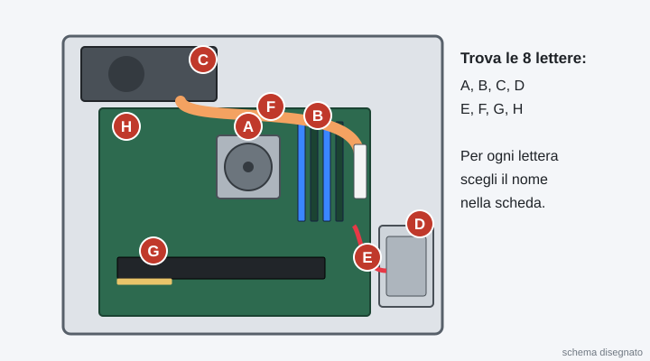
Segna la mappa dei cavi
Prima di staccare un cavo, OCCHI guarda dove è attaccato e spunta il cavo nella mappa dei cavi della scheda. Si tira sempre dalla spina, mai dal filo.
তার খোলার আগে OCCHI দেখে কোথায় লাগানো আছে আর ফর্মে টিক দেয়। সবসময় প্লাগ ধরে টানো, তার ধরে নয়।
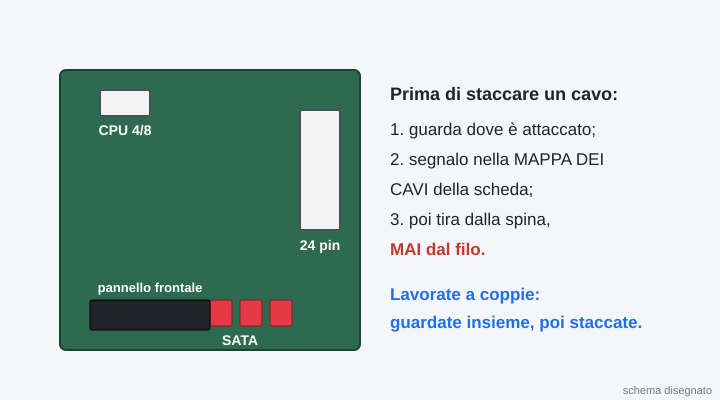
Guarda l'ordine dello smontaggio
Si smonta in quest'ordine: cavi di alimentazione, cavi SATA, scheda video (se c'è), RAM, disco. CPU e dissipatore oggi non si smontano.
এই ক্রমে খোলো: পাওয়ার তার, SATA তার, গ্রাফিক্স কার্ড (থাকলে), RAM, ডিস্ক। CPU আর কুলার আজ খুলবে না।
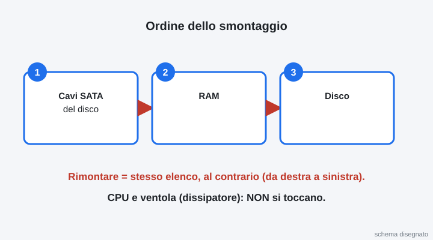
Stacca i cavi
MANI stacca il cavo 24 pin, il cavo CPU 4/8 pin e i cavi SATA del disco. Premi il gancio della spina e tira dritto.
MANI ২৪ পিন, CPU ৪/৮ পিন আর ডিস্কের SATA তার খোলে। প্লাগের হুক চেপে সোজা টানো।
Togli la RAM e la scheda video
Apri i due ganci della RAM: il banco si alza da solo. Prendilo dai bordi, mai dai contatti dorati. Se c'è la scheda video: togli la sua vite, premi il gancio dello slot e tirala dritta.
RAM-এর দুই হুক খোলো, RAM নিজেই উঠে আসবে। কিনারা ধরে নাও, সোনালি অংশ ছোঁবে না। গ্রাফিক্স কার্ড থাকলে স্ক্রু খুলে সোজা টানো।
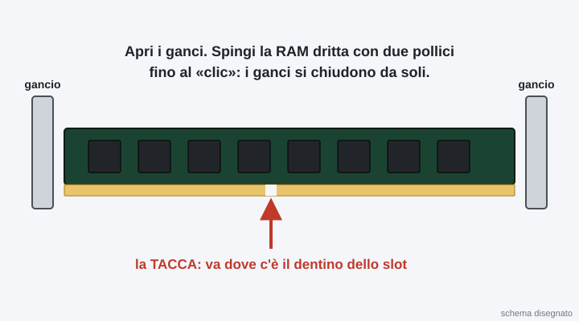
Togli il disco
Svita le viti del disco (o apri la slitta) e sfilalo. Leggi l'etichetta: è un SSD o un HDD? Quanti GB? Scrivilo nella scheda.
ডিস্কের স্ক্রু খুলে বের করো। লেবেল পড়ো: SSD না HDD? কত GB? ফর্মে লেখো।
Metti i pezzi in ordine sul tavolo
Metti i pezzi in fila, da sinistra a destra, nell'ordine in cui li hai tolti. Così il rimontaggio è facile.
খোলার ক্রমে টুকরোগুলো বাঁ থেকে ডানে সারি করে রাখো।
Compila la scheda e mandala al prof
Compilate la scheda qui sotto (OCCHI scrive, MANI controlla). Poi premi Manda al prof: un clic solo. Si apre la pagina «Consegna arrivata al prof».
নিচের ফর্ম পূরণ করো, তারপর «Manda al prof» চাপো। একবার ক্লিক।
Se il bottone non funziona: premilo di nuovo tra un minuto. La scheda resta salvata in questa pagina.
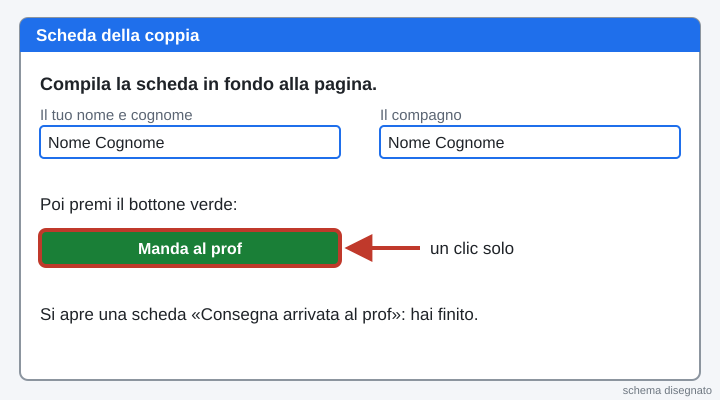
La pagina viene aggiornata spesso durante la lezione: premi F5 per vedere la versione nuova.